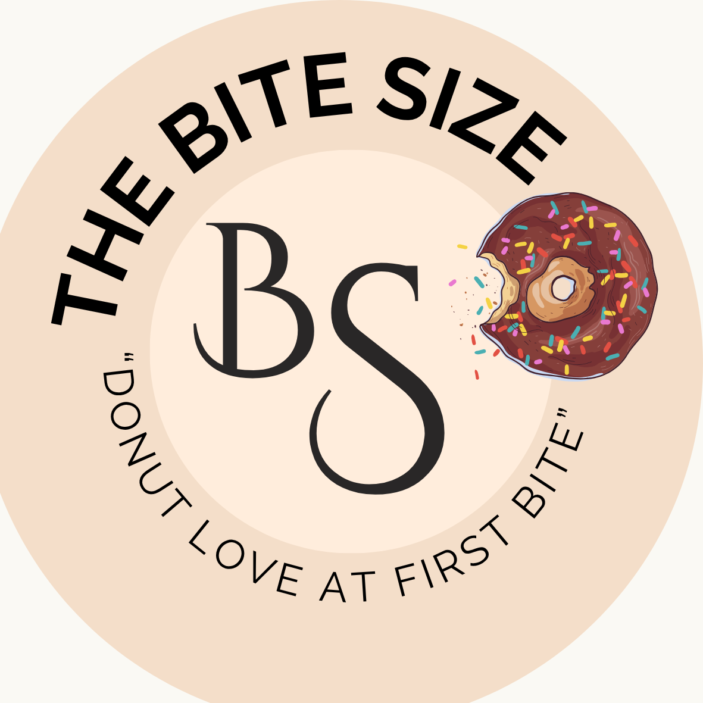

“The Bite Size” was first created for our entrepreneurship group project last year. It continues to inspire my passion for branding and business today. The initials BS stand for Bite Size, symbolizing simplicity and style. Our catchy line, “Donut Love at First Bite,” captures the emotional connection we want customers to feel. It’s not just about eating a donut, it’s about falling in love with the experience from the very first taste.